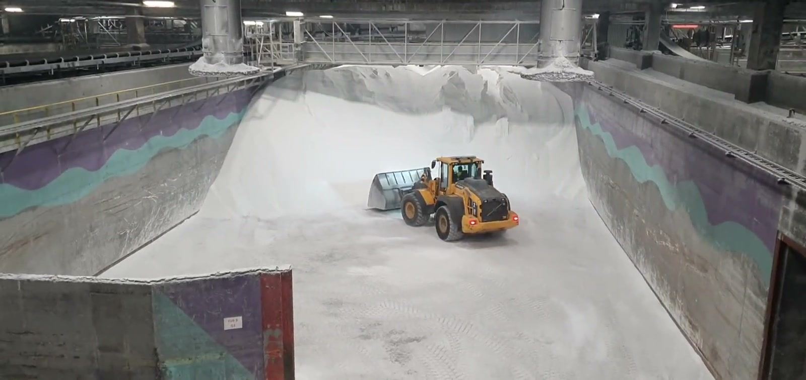
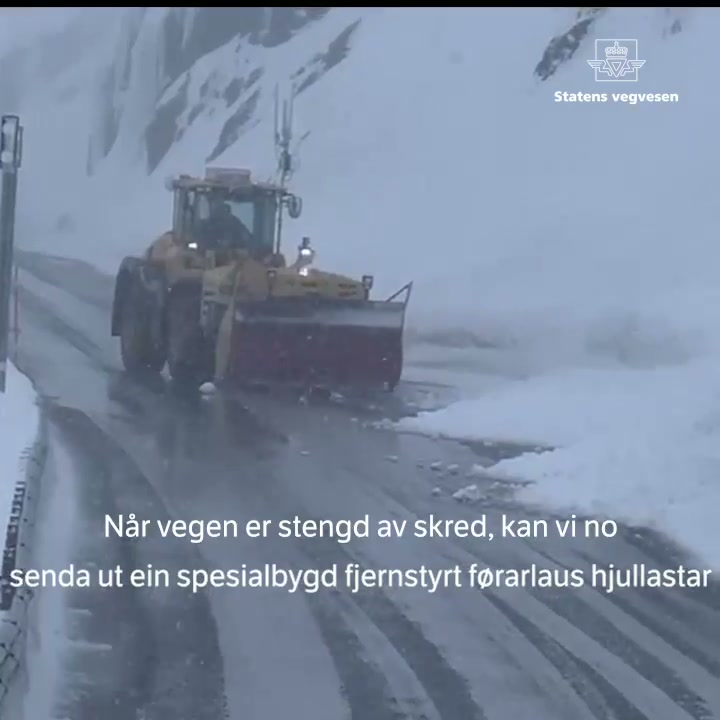
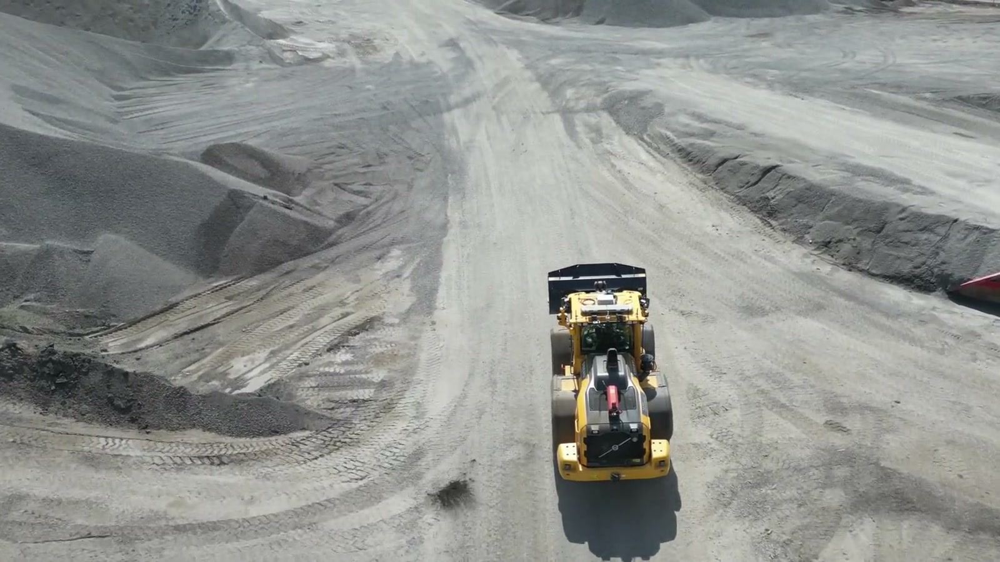
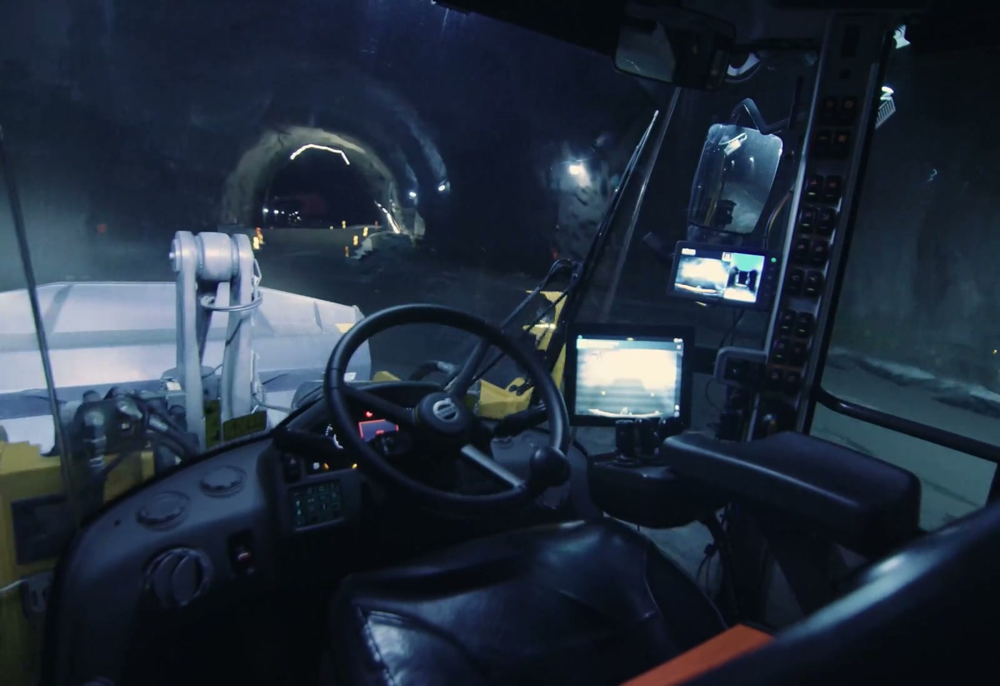
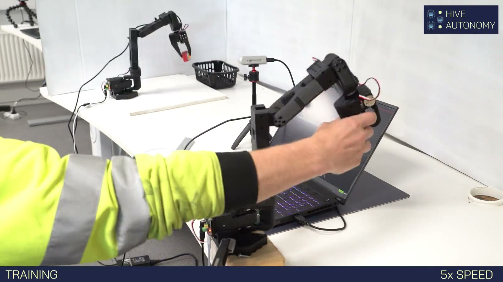
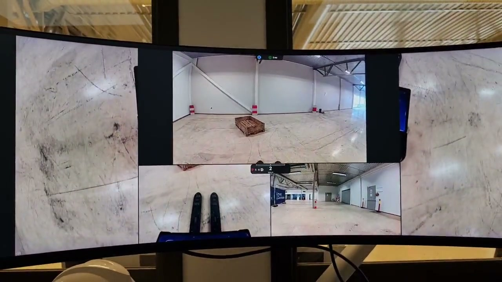

Building a world with unlimited access to skilled industrial labor.
A physical AI worker.
A real, physical agent powered by AI — deployed in the real world.
Sees through cameras, lidar, and sensors.
Understands goals and instructions in natural language.
Acts through direct machine control — driving, lifting, navigating, adapting.
The body is the machine.
Hive runs a model.
Supervised physical AI, live in industrial operations.




Humans in the loop.
Machines at the edge.
When the model is confident, it runs. When it hesitates, the operator takes over. When the operator acts, the model learns.
There is no version of physical AI where the human disappears on day one. Our bet is that the human disappears slowly, by design — one task, one confidence threshold, one deployment at a time.
The sim-to-real gap closed in 2024.
VLA: Vision · Language · Action.
Lidar point clouds
Depth maps
Drive · lift · steer
End-effector poses
The first VLAs — RT-2 (Google DeepMind, 2023), OpenVLA (Stanford, 2024), π0 (Physical Intelligence, 2024) — showed the paradigm works on robot arms. Hive is adapting the paradigm to industrial machinery. Same class of model. Bigger bodies.
Four modalities, one shared embedding space.
Vision. Multi-camera RGB. Front, side, rear, and task-focused. Stereo for depth.
Lidar. 3D point clouds for spatial awareness in dust, fog, darkness.
Proprioception. Joint positions, hydraulic pressures, wheel velocity, load sensors — the machine's sense of its own body.
Language. Natural-language task goals from the operator. No command DSL. No scripting language.
Continuous control is a diffusion problem.
Why diffusion: behavior cloning collapses to the mean when multiple actions are valid. Diffusion policies sample from the full action distribution — preserving that sometimes you swing left, sometimes right is the correct behavior.
What it looks like in production: Muninn iteratively denoises an action trajectory conditioned on the current state and Huginn's understanding. The same family of models that generates images — now generating machine motion.
A robot arm shares geometry with an excavator.
Deployment is data.
Data is the next model.
One model. Every industrial machine.
Reach stackers · Excavators
Haulers · Terminal tractors
for industrial physical AI
Light tasks · heavy tasks
Cross-task generalization
From raw pixels to a grounded goal.
Huginn is the sensory and reasoning half of ODIN. It takes multi-camera images, lidar, proprioception, and the operator's natural-language instruction — and produces a single grounded representation of what needs to happen next.
Built on a vision-language backbone pretrained on web-scale image-text data. Fine-tuned on industrial imagery: construction sites, quarries, warehouses, terminals.
From grounded goal to machine control.
Muninn is the motor half of ODIN. It takes Huginn's representation of the task, plus the current machine state, and generates the next few seconds of continuous control — via diffusion.
Memory lives here too: short-term operational context (what the operator said twenty seconds ago, what just happened on the site) conditions every trajectory the policy samples.
Two models. One worker.
+ Fusion
+ Execution

We started with a robot arm.
Six degrees of freedom, hundreds of pick-and-place trajectories a day, operator-mounted teleop. Every trajectory — what the operator did, what the cameras saw, what the joints measured — was labeled training data for the first ODIN checkpoint.

Same model class. Industrial body.
Toyota forklift running under ODIN in VLA mode. Camera in. Natural-language goal in. Machine control out. No per-task script. The transfer from robot arm to industrial machine is the thesis that made Hive possible.
The model generalizes. The verticals open in sequence.
Fully autonomous industrial operations.
Supervised from one operations center.
Today, one operator supervises two to three machines.
As ODIN improves — each deployment feeding the next model — that ratio scales: one operator to four, to six, to dozens of machines across sites.
Unlimited access to skilled industrial labor. Decoupled from the human hour.